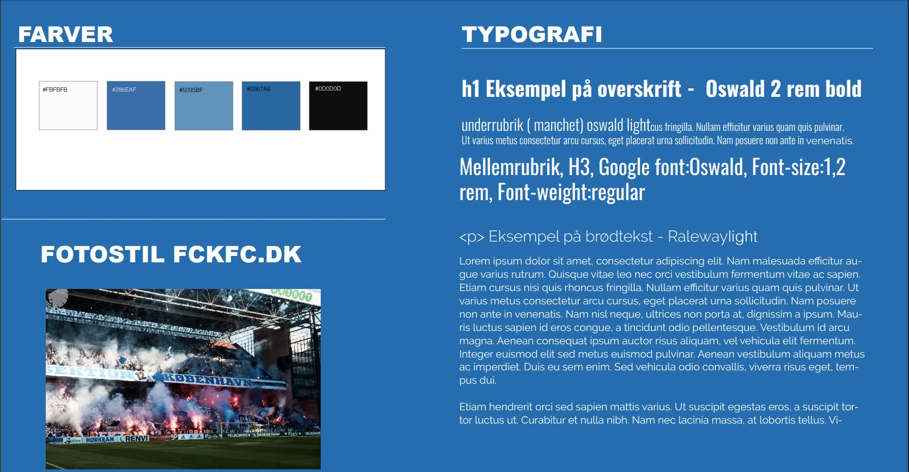

03.02.01 - 03.02.08 - Redesign
I disse opgaver blev vi tildelt grupper der skulle prøve kræfter med et redesign af en selvvalgt virksomheds-website. Vi kom hurtigt i kontakt med Fck's fanclub og lavede en aftale med dem om, at komme og filme et interview, da udgangspunktet for redesignet skulle være en virksomheds-præsentationsvideo.